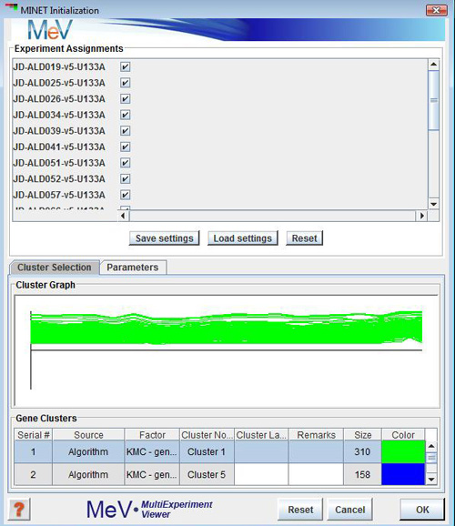

MINET:Mutual Information Network
(Patrick E. Meyer, Frederic Lafitte, and Gianluca Bontempi. minet: A R/Bioconductor Package for Inferring Large Transcriptional Networks Using Mutual Information. BMC Bioinformatics, Vol 9, 2008.)
For a given dataset, minet infers the network in two steps. First, the mutual information between all pairs of variables in dataset is computed according to the estimator argument. Then the algorithm given by method considers the estimated mutual information in order to build the network.

MINET Initialization Dialog box
Parameters
- Dataset: A cluster of genes.
- Method: The inference algorithm:
- CLR:
The CLR algorithm is an extension of relevance network. This algorithm computes the mutual information for each pair
of genes and derives a score related to the empirical distribution of the MI values.Instead of considering the mutual
information I(Xi;Xj) between features Xi and Xj, it takes into account the score from the mean and the standard deviation
of the empirical distribution of the mutual information values I(Xi;Xk), k=1,...,n.
- Aracne:
The Aracne procedure starts by assigning to each pair of nodes a weight equal to their mutual
information. Then, the weakest edge of each triplet is interpreted as an indirect interaction and is
removed if the difference between the two lowest weights is above a threshold eps.
- MRNET:
The MRNET approach consists in repeating a MRMR (Maximum Relevance Minimum Redundancy) feature selection procedure
for each variable of the dataset. The MRMR method starts by selecting the variable Xi having the highest mutual
information with the target Y. In the following steps, given a set S of selected variables, the criterion
updates S by choosing the variable Xk that maximizes the MRMR score. The weight of each pair Xi;Xj will be the maximum
score between the one computed when Xi is the target and the one computed when Xj is the target.
- MRNETB:
MRNETB takes the mutual information matrix as input in order to infer the network using the maximum
relevance/minimum redundancy feature selection method - see MRNET.
This method is a variant of MRNET (not yet available).
- Estimator: The name of the entropy estimator to be used for mutual information computation:
"mi.empirical", "mi.mm", "mi.shrink", "mi.sg", "spearman", "kendall", "pearson".
- Discretization: The name of the discretization method to be used, if required by the estimator
"none", "equalfreq", "equalwidth" or "globalequalwidth".
- Number of Bins: Integer specifying the number of bins to be used for the discretization
if disc is set properly. By default the number of bins is set to sqrt(N) where N is the number of samples.
- Output: Minet returns a matrix which is the weighted adjacency matrix of the network.
The weights range from 0 to 1 and can be seen as a confidence measure on the presence of the arcs.
In order to display the network, MeV launches Cytoscape via webstart and displays the network in that application.
Output
Minet returns a matrix which is the weighted adjacency matrix of the network. The weights range from 0 to 1 and can be seen as a confidence measure on the presence of the arcs. In order to display the network, MeV launches Cytoscape via webstart and displays the network in that application.
How to Run MINET
- Create Cluster
- Launch MINET from ToolBar-->Statistics-->MINET
- Un-select samples to be excluded from analysis
- Select one cluster from Cluster selection Panel
- Click on Parameters tab to change method, estimator etc or leave them as is to accept default
- Hit OK
Viewing the Network
The network is displayed in Cytoscape. IN the initial view all nodes are stacked up on top of each other. In Cytoscape follow MenuBar-->Layout-->File-–>Organic (or any layout of your choice) to layout the nodes.
{kind=link}
{kind=link}